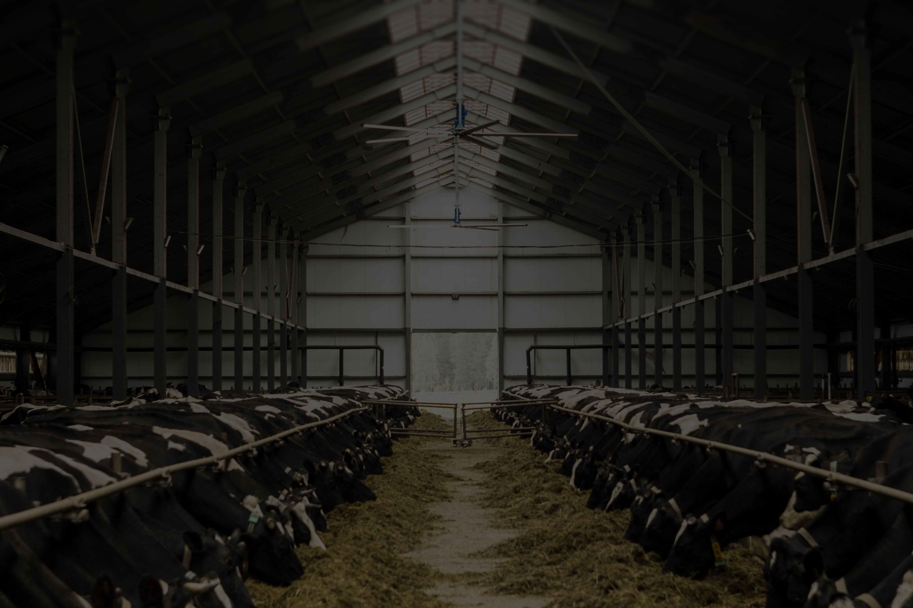

Наши услуги
Список услуг которые оказывает наша компания, своим партнёрам.
Ветеринарные консультации
Наша компания осуществляет выезды ветеринарного врача
непосредственно на фермы, производит вскрытие павших животных и постановку диагноза.
Составляем
высокоэффективные и безопасные схемы лечения и профилактики заболеваний. Консультации
проводит
кандидат ветеринарных наук Постолатий В.В.
Подбор препаратов и кормовых добавок
Реализуем недорогие, качественные и экологически безвредные
препараты и кормовые добавки. Широкий ассортимент природных соединений позволяет использовать
продукцию без периода ожидания. Имеем собственные запатентованные разработки лекарственных
кормовых добавок не имеющих аналогов в Республике.

Составление рационов кормления
Нашим клиентам мы предоставляем услуги по оперативному
составлению рационов кормления.

Доставка
Мы организуем доставку приобретённого товара к Вам на ферму, со
всей сопутствующей документацией и сертификацией по товару, в кротчайшие сроки.

Помощь в выборе сырья
Мы поможем Вам подобрать наиболее выгодные и качественные,
протеиновые компоненты комбикорма, исходя из текущих сезонных цен, качества и наличия на
территории РМ.

Гибкая ценовая политика
Мы предлагаем гибкую ценовую политику на всю линейку товаров, а
также способны предложить различные варианты сотрудничества и оплаты товаров.

наша команда


Примеры рационов
Просим не использовать без дополнительной консультации со
специалистами по кормлению!
Примеры рационов для птицы

В этой рубрике мы собрали для ознакомления, некоторые рационы
применяемые на практике нашими клиентами. Эти рационы были созданы исходя из индивидуальных
особенностей и потребностей наших партнёров.
Ведь не секрет что у каждой фермы или хозяйства есть свои традиции и схемы выращивания птицы,
не говоря уже об условиях и генетике. Поэтому мы настоятельно рекомендуем перед попыткой
использовать какие-либо рационы опубликованные на нашем сайте, пройти обязательную
дополнительную консультацию по кормлению, с нашими специалистами.
Приятного ознакомления.
Примеры рационов для свиней
Существуют различные цепочки кормления подразделяющиеся как по
живому весу животных так и по временным рамкам. Разделение рационов кормления по временным
рамкам (пример: 0-2 мес, 2-4 мес) является более обобщающими нормами, и не способны
достаточно точно отразить потребности животных той или иной генетики в различные фазы
развития. Именно по этому у нас на сайте периоды кормления подразделены на категории исходя
из живого веса особи.
Примеры рационов для КРС
Конечно же составление рационов для КРС — целая наука. Наука в
которой учитываются очень многие факторы и было бы неверно рекомендовать какие-либо рационы
без предварительного сбора большого массива необходимой информации по каждой отдельной ферме
или клиенту. Тем не менее дабы продемонстрировать, что наша компания легко ориентируется и в
этом вопросе, мы решили добавить несколько примеров рационов разработанных французскими
специалистами специально для наших клиентов.
Примеры рационов для кроликов
Само составление рационов для кроликов изначально затрудняют
физические потребности этих животных. Как правило это сравнительно низкий уровень обменной
энергии и достаточно высокий уровень протеина и клетчатки. По этому, фермеры очень часто
встречаются с большим количеством жира на тушке, плохими выходами по мясу с каркаса,
медленным ростом и и не всегда лучшими вкусовыми качествами конечного продукта. В этой
рубрике мы поделимся с Вами некоторым опытом в составлении рационов и опробованными рационами
в полевых условиях. В любом случае Вы должны знать что каждый из этих рационов, был составлен
с учётом индивидуальных предпочтений для каждого конкретного клиента. Используйте эти рационы
только после дополнительной консультации с нашими специалистами.
Полезная информация
Для того чтобы сделать по максимуму доступной для наших партнёров, всю накопленную нами информацию, мы решили организовать небольшой блог.
Блог, в котором мы будем делиться всей имеющейся информацией. Интересными статьями с различных ресурсов, опытом сотрудничающих с нашей компанией специалистов, различными инновациями от наших зарубежных партнёров, будущими мероприятиями и событиями касающихся индустрии животноводства и сельского хозяйства в мире и по РМ.
Надеемся, что этот раздел сайта принесёт Вам много пользы и окажет благоприятное воздействие на развитие Вашего бизнеса.
